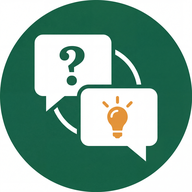

<!doctype html>
<html lang="ru">
<head>
<meta charset="utf-8"/>
<title>Кабинет ученика — Домашка</title>
<meta name="viewport" content="width=device-width, initial-scale=1"/>

<!-- Foundations -->
<link rel="stylesheet" href="colors_and_type.css"/>
<link rel="stylesheet" href="student-kit/tokens.css"/>
<link rel="stylesheet" href="student-cabinet.css"/>
<link rel="stylesheet" href="student-chat.css"/>

<!-- KaTeX (used by SInlineMath / SFormulaBlock) -->
<link rel="stylesheet" href="https://cdn.jsdelivr.net/npm/katex@0.16.9/dist/katex.min.css"/>
<script defer src="https://cdn.jsdelivr.net/npm/katex@0.16.9/dist/katex.min.js"></script>

<!-- Lucide icons -->
<script src="https://unpkg.com/lucide@latest/dist/umd/lucide.min.js"></script>

<!-- React + Babel -->
<script src="https://unpkg.com/react@18.3.1/umd/react.development.js" integrity="sha384-hD6/rw4ppMLGNu3tX5cjIb+uRZ7UkRJ6BPkLpg4hAu/6onKUg4lLsHAs9EBPT82L" crossorigin="anonymous"></script>
<script src="https://unpkg.com/react-dom@18.3.1/umd/react-dom.development.js" integrity="sha384-u6aeetuaXnQ38mYT8rp6sbXaQe3NL9t+IBXmnYxwkUI2Hw4bsp2Wvmx4yRQF1uAm" crossorigin="anonymous"></script>
<script src="https://unpkg.com/@babel/standalone@7.29.0/babel.min.js" integrity="sha384-m08KidiNqLdpJqLq95G/LEi8Qvjl/xUYll3QILypMoQ65QorJ9Lvtp2RXYGBFj1y" crossorigin="anonymous"></script>

<style>
html, body { background: #EFEEEA; }
body { font-family: var(--sokrat-font-base, "Golos Text", system-ui, sans-serif); }

.dc-section { background: transparent; }

/* Artboard inner — give the desktop & mobile shells a clean white frame */
.cabinet-desktop {
  width: 100%; height: 100%;
  background: var(--sokrat-surface);
  display: flex; flex-direction: column;
  font-family: var(--sokrat-font-base, "Golos Text", system-ui, sans-serif);
}

/* Notes pinned at the top of the canvas */
.notes {
  max-width: 1100px;
  margin: 24px auto 8px;
  padding: 18px 22px;
  background: #fff;
  border: 1px solid var(--sokrat-border-light);
  border-radius: 14px;
  font-size: 13.5px; line-height: 1.6;
  color: var(--sokrat-fg2);
}
.notes h1 { font-size: 18px; margin: 0 0 6px; color: var(--sokrat-fg1); letter-spacing: -0.005em; }
.notes h2 { font-size: 13px; margin: 12px 0 4px; color: var(--sokrat-green-800); text-transform: uppercase; letter-spacing: 0.06em; }
.notes ul { margin: 4px 0 4px 18px; padding: 0; }
.notes li { margin: 2px 0; }
.notes em { color: var(--sokrat-fg3); font-style: normal; }
</style>
</head>
<body>

<div id="root"></div>

<!-- Component scripts (order matters) -->
<script type="text/babel" src="student-kit/primitives.jsx"></script>
<script type="text/babel" src="student-homework-list.jsx"></script>
<script type="text/babel" src="student-problem-chat.jsx"></script>
<script type="text/babel" src="design-canvas.jsx"></script>

<script type="text/babel" data-presets="env,react">
const { DesignCanvas, DCSection, DCArtboard } = window;

// ─── Desktop chrome (top nav matching the screenshot) ──────
function DesktopNav({ active = "homework" }) {
  return (
    <div className="std-topnav">
      <div className="std-topnav__brand">
        
        <span className="std-topnav__brand-name">Сократ AI</span>
      </div>
      <div className="std-topnav__tabs">
        <button className={"std-topnav__tab" + (active==="homework"?" std-topnav__tab--active":"")}>
          <SIcon name="book-open" size={16}/>Домашка
        </button>
        <button className="std-topnav__tab"><SIcon name="clipboard-check" size={16}/>Пробники</button>
        <button className="std-topnav__tab"><SIcon name="message-square" size={16}/>Чат</button>
        <button className="std-topnav__tab"><SIcon name="target" size={16}/>Тренажёр</button>
        <button className="std-topnav__tab"><SIcon name="trending-up" size={16}/>Прогресс</button>
        <button className="std-topnav__tab"><SIcon name="user" size={16}/>Профиль</button>
      </div>
      <div className="std-topnav__right">
        <span className="std-topnav__user">
          <span className="std-topnav__user-avatar">АР</span>
          <span style={{display:"flex", flexDirection:"column", lineHeight:1.2}}>
            <span className="std-topnav__user-name">Артём Р.</span>
            <span className="std-topnav__user-streak"><SIcon name="flame" size={12}/>12 дней</span>
          </span>
        </span>
        <button className="std-topnav__icon-btn" aria-label="Выход"><SIcon name="log-out" size={18}/></button>
      </div>
    </div>
  );
}

// ─── Mobile shell wrapper ──────────────────────────────────
function MobileShell({ children, h1 = "Домашка", tabs, statusbar = true }) {
  return (
    <div className="std-mobile">
      {statusbar && (
        <div className="std-mobile__statusbar">
          <span>9:41</span>
          <span className="std-mobile__statusbar-r">
            <SIcon name="signal" size={14}/>
            <SIcon name="wifi" size={14}/>
            <SIcon name="battery-full" size={14}/>
          </span>
        </div>
      )}
      <div className="std-mobile__topbar">
        <div className="std-mobile__brand">
          
          <span className="std-mobile__brand-name">Сократ AI</span>
        </div>
        <span className="std-mobile__streak">
          <SIcon name="flame" size={14}/>12
        </span>
        <button style={{width:32,height:32,border:0,background:"transparent",display:"grid",placeItems:"center",color:"var(--sokrat-fg2)"}} aria-label="Меню"><SIcon name="bell" size={18}/></button>
      </div>
      <div className="std-mobile__h1">{h1}</div>
      {tabs && (
        <div className="std-mobile__tabs">{tabs}</div>
      )}
      <div className="std-mobile__scroll">
        {children}
      </div>
      <div className="std-mobile__botnav">
        <button className="std-mobile__botnav-item std-mobile__botnav-item--active"><SIcon name="book-open" size={22}/><span>Домашка</span></button>
        <button className="std-mobile__botnav-item"><SIcon name="clipboard-check" size={22}/><span>Пробники</span></button>
        <button className="std-mobile__botnav-item"><SIcon name="message-square" size={22}/><span>Чат</span></button>
        <button className="std-mobile__botnav-item"><SIcon name="target" size={22}/><span>Тренажёр</span></button>
        <button className="std-mobile__botnav-item"><SIcon name="user" size={22}/><span>Профиль</span></button>
      </div>
    </div>
  );
}

// Mobile filter tabs (for V1, V2)
const MobileTabs = () => (
  <>
    <button className="std-mobile__tab std-mobile__tab--active">Все <span className="std-mobile__tab-count">8</span></button>
    <button className="std-mobile__tab">К сдаче <span className="std-mobile__tab-count">5</span></button>
    <button className="std-mobile__tab">Физика <span className="std-mobile__tab-count">3</span></button>
    <button className="std-mobile__tab">Матем. <span className="std-mobile__tab-count">3</span></button>
    <button className="std-mobile__tab">Информ. <span className="std-mobile__tab-count">2</span></button>
  </>
);

// ─── Page-head with stats (desktop) ────────────────────────
const PageHead = () => (
  <div className="std-page-head">
    <div>
      <h1 className="std-page-head__title">Домашние задания</h1>
      <div className="std-page-head__subtitle">Привет, Артём! У тебя 2 задания к концу дня и одно просрочено — давай разберёмся 🙂</div>
    </div>
    <div className="std-page-head__stats">
      <div className="std-page-head__stat std-page-head__stat--accent">
        <span className="std-page-head__stat-value">2</span>
        <span className="std-page-head__stat-label">К сдаче сегодня</span>
      </div>
      <div className="std-page-head__stat std-page-head__stat--brand">
        <span className="std-page-head__stat-value">85%</span>
        <span className="std-page-head__stat-label">Сдано вовремя</span>
      </div>
      <div className="std-page-head__stat">
        <span className="std-page-head__stat-value">4.7</span>
        <span className="std-page-head__stat-label">Средний балл</span>
      </div>
    </div>
  </div>
);

// ─── Desktop wrapper for a list variant ───────────────────
function CabinetDesktop({ children, padTop = false }) {
  return (
    <div className="cabinet-desktop" data-screen-label="Десктоп · Домашка">
      <DesktopNav active="homework"/>
      <PageHead/>
      <div style={{flex:1, overflow:"auto"}}>{children}</div>
    </div>
  );
}

// ─── Notes header on canvas ───────────────────────────────
const NotesHeader = () => (
  <div className="notes">
    <h1>Кабинет ученика → вкладка «Домашка»</h1>
    <p style={{margin:"4px 0 8px"}}>
      Три варианта главного экрана + чат с Сократом по задаче в трёх форм-факторах. Контекст: ученик 11 класс,
      готовится к ЕГЭ профильная математика и физика. Репетиторы — <em>Анна Смирнова</em> (физика),
      <em> Илья Ковалёв </em>(матем), <em>Мария Петрова</em> (информатика).
    </p>
    <h2>Что исследовалось</h2>
    <ul>
      <li><b>Khanmigo / Khan Academy</b> — короткие шаги, AI слева/справа, фокус на «не давай ответ»</li>
      <li><b>Фоксфорд / Умскул / Яндекс Учебник</b> — карточки ДЗ с прогрессом и дедлайнами, фильтры по предмету</li>
      <li><b>Яндекс Репетитор</b> — встроенный чат по задаче, голос+фото, акцент на ход решения</li>
    </ul>
    <h2>Решения, которые я применил</h2>
    <ul>
      <li>Группировка <b>Сегодня / Завтра / На неделе / Просрочено / На проверке / Оценено</b> с цветными «дедлайн-пилюлями»</li>
      <li>Карточки ДЗ всегда показывают: предмет, тему, репетитора, дедлайн с urgent-цветом, X/N задач, ≈ время</li>
      <li>Чат с ИИ — большие AI-бабблы слева с аватаром Сократа и кикером, ответы ученика — компактные справа, серые</li>
      <li>Typing-индикатор «Сократ думает над подсказкой…»</li>
      <li><b>Смелое</b>: на десктопе чат и задача рядом, на мобайле — задача сверху сворачивается, чат занимает экран</li>
    </ul>
  </div>
);

// ─── Mount the canvas ─────────────────────────────────────
function App(){
  return (
    <>
      <NotesHeader/>
      <DesignCanvas title="Кабинет ученика · Домашка" subtitle="3 варианта списка + 3 форм-фактора чата с ИИ">
        {/* === LIST VARIANTS === */}
        <DCSection id="list-v1" title="Вариант 1 — Компактный список с группами" subtitle="Skim-friendly, плотный, как Asana/Linear. Лучше всего для регулярных пользователей.">
          <DCArtboard id="list-v1-mobile" label="Mobile · 390×844" width={390} height={844}>
            <MobileShell tabs={<MobileTabs/>}>
              <HomeworkListV1/>
            </MobileShell>
          </DCArtboard>
          <DCArtboard id="list-v1-desktop" label="Desktop · 1280×860" width={1280} height={860}>
            <CabinetDesktop>
              <HomeworkListV1 desktop/>
            </CabinetDesktop>
          </DCArtboard>
        </DCSection>

        <DCSection id="list-v2" title="Вариант 2 — Богатые карточки с акцентом" subtitle="Hero-treatment для срочных, ход прогресса по задачам, аватар репетитора. Эмоционально сильнее.">
          <DCArtboard id="list-v2-mobile" label="Mobile · 390×844" width={390} height={844}>
            <MobileShell>
              <HomeworkListV2/>
            </MobileShell>
          </DCArtboard>
          <DCArtboard id="list-v2-desktop" label="Desktop · 1280×860" width={1280} height={860}>
            <CabinetDesktop>
              <HomeworkListV2 desktop/>
            </CabinetDesktop>
          </DCArtboard>
        </DCSection>

        <DCSection id="list-v3" title="Вариант 3 — Таймлайн по дедлайнам" subtitle="Смелый формат: вертикальная ось времени с маркерами «Сегодня/Завтра/Неделя» — превращает ДЗ в расписание.">
          <DCArtboard id="list-v3-mobile" label="Mobile · 390×844" width={390} height={844}>
            <MobileShell>
              <HomeworkListV3/>
            </MobileShell>
          </DCArtboard>
          <DCArtboard id="list-v3-desktop" label="Desktop · 1280×860" width={1280} height={860}>
            <CabinetDesktop>
              <HomeworkListV3 desktop/>
            </CabinetDesktop>
          </DCArtboard>
        </DCSection>

        {/* === PROBLEM + CHAT VARIANTS === */}
        <DCSection id="chat" title="Чат с Сократом по задаче" subtitle="Три форм-фактора. На мобайле приоритет — что отвечает ИИ; на планшете и десктопе — split: задача слева, чат справа.">
          <DCArtboard id="chat-mobile" label="Mobile · 390×844" width={390} height={844}>
            <div className="std-mobile">
              <div className="std-mobile__statusbar">
                <span>9:41</span>
                <span className="std-mobile__statusbar-r">
                  <SIcon name="signal" size={14}/>
                  <SIcon name="wifi" size={14}/>
                  <SIcon name="battery-full" size={14}/>
                </span>
              </div>
              <div style={{flex:1, minHeight:0, display:"flex", flexDirection:"column"}}>
                <ProblemMobile/>
              </div>
            </div>
          </DCArtboard>
          <DCArtboard id="chat-tablet" label="Tablet · 834×1100" width={834} height={1100}>
            <div style={{height:"100%", display:"flex", flexDirection:"column", background:"#fff"}}>
              <ProblemTablet/>
            </div>
          </DCArtboard>
          <DCArtboard id="chat-desktop" label="Desktop · 1280×860" width={1280} height={860}>
            <div style={{height:"100%", display:"flex", flexDirection:"column"}} data-screen-label="Десктоп · Чат с задачей">
              <DesktopNav active="homework"/>
              <div style={{flex:1, minHeight:0}}>
                <ProblemDesktop/>
              </div>
            </div>
          </DCArtboard>
        </DCSection>
      </DesignCanvas>
    </>
  );
}

// Render Lucide icons after mount
const root = ReactDOM.createRoot(document.getElementById("root"));
root.render(<App/>);

// Re-render lucide icons periodically (since SIcon does it manually too, this is a safety net)
setTimeout(() => { if (window.lucide && window.lucide.createIcons) window.lucide.createIcons(); }, 300);
</script>

</body>
</html>
